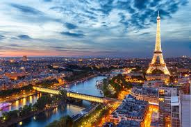
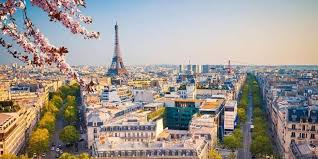
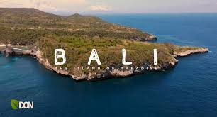
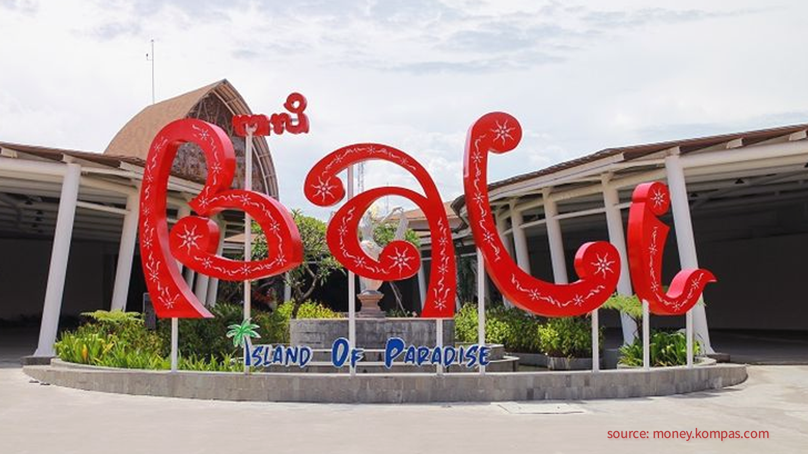
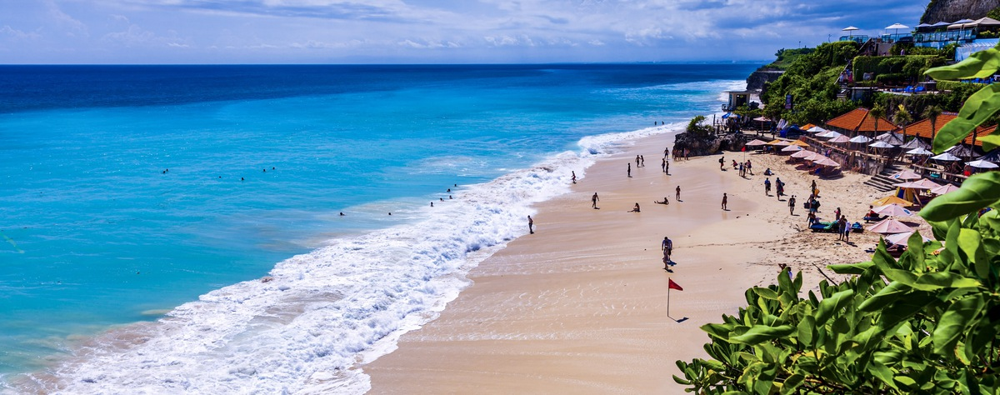
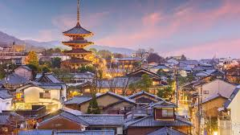
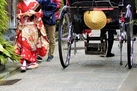
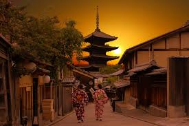

Wanderlust Adventures
Home
Destinations
Contact
Top Destinations
Discover breathtaking places to visit around the world:
Paris - The City of Lights
 
Bali - Island Paradise
  
Kyoto - Traditional Charm
  